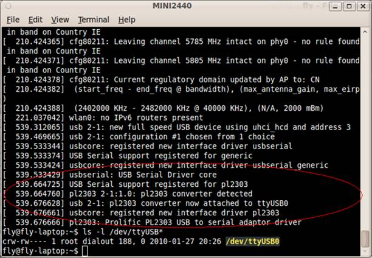
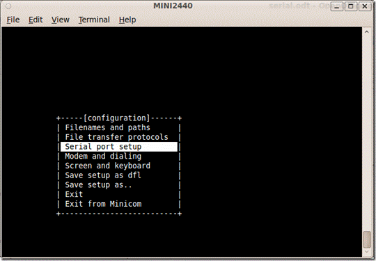
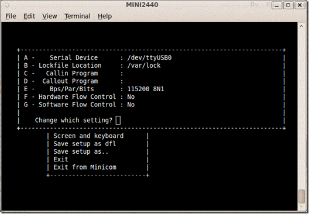

站长原创，版权所有ITEEDU，2011-05-22
去年已经通过了，但是在经历了给ubuntu系统的升级之后，又和开发板连接不上了。就郁闷了。又开始回到原点了，通过串口想办法连接开发板。之后，发誓一定要将过程记录下来。
1. 基于PL2303芯片的USB转串口器
从实验室搜来的USB转串口器，已经很老了，但是尚且知道它是基于PL2303的。还有只能在linux系统中被识别，windows下边找不着驱动。
幸好还有，故而可以在自己的笔记本上建立开发环境了。哈哈
没有的童鞋们，就自己买一个吧。2.连接PXA270-s开发板
将USB串口转接器 插上开发板和电脑后，在终端上敲dmesg命令，可以查看USB转接口已经被PC识别，如图1所示:

图1 查看usb串口转接器
从上图中我们可以看到我们所连接的串口设备是 ttyUSB0，可以通过命令 ls -l /dev/ttyUSB*来查看相关的信息。至此，我们已经顺利的将串口连接到Ubuntu系统上了。这里顺便提起一下，我在Windows下使用USB 转串口时，要先从网上下载一个安装PL-2302 USB Serial Driver，安装该驱动以后，才可以正常使用，而Linux内核中已经支持PL2303芯片，所以不需要自行安装。下面就会介绍minicom和 kermit的使用。3.minicom安装及设置
（1）Ubuntu系统中默认是没有安装 minicom软件，所以我们首先自己需要安装minicom，可以使用apt-get 命令来安装。
（2）安装完成以后，我们运行minicom -s命令进行一些初始配置，如图2所示：
图2 minicom初始化参数设置1
（3）严格参照图3所示的结构来初始化minicom参数，否则可能会出错哦。

图3 minicom初始化参数设置2